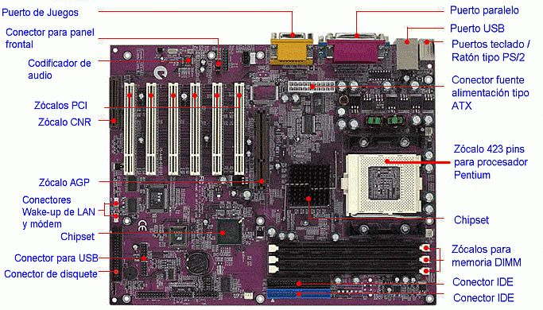
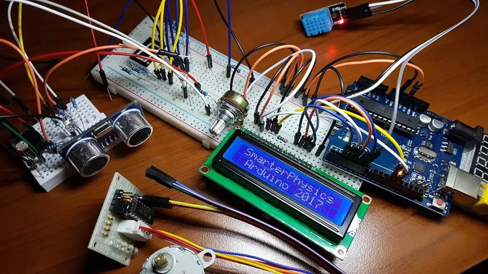

-- Laboratorio de Hardware --
// Si en Laboratorio de Sistemas Operativos aprendemos sobre lo no tangible, acá aprendemos sobre lo tangible, es decir, la parte física de la computadora
// Lo que aprendemos
> Aprendemos a diferenciar cada componente de la computadora y cuál es la función de cada uno de ellos.

> Aprendemos también sobre los periféricos. Por un lado están los periféricos de entrada, que nos permiten enviarle datos o información a la computadora (por ejemplo, teclado, mouse, etc); y por el otro, los de salida por los cuales la computadora envía información que podamos entender (monitor, auriculares, etc).

> Aprendemos a armar y desarmar las computadoras, ya sabiendo donde va cada componente. También vemos sistemas de almacenamiento.
> Aprendemos a usar Arduino. Es una plataforma de hardware y software libre que permite crear diversos proyectos electrónicos.

Volver